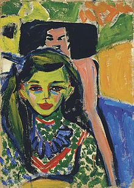

expresionismo
Nerea Álvarez Justel - nerea.alvjus@educa.jcyl.es
 El expresionismo fue un movimiento cultural surgido en Alemania a principios del siglo XX, que se plasmó en un gran número de campos: artes plásticas, arquitectura, literatura, música, cine, teatro, danza, fotografía, etc. Su primera manifestación fue en el terreno de la pintura, coincidiendo en el tiempo con la aparición del fauvismo francés, hecho que convirtió a ambos movimientos artísticos en los primeros exponentes de las llamadas «vanguardias históricas». Más que un estilo con características propias comunes fue un movimiento heterogéneo, una actitud y una forma de entender el arte que aglutinó a diversos artistas de tendencias muy diversas y diferente formación y nivel intelectual. Surgido como reacción al impresionismo, frente al naturalismo y el carácter positivista de este movimiento de finales del siglo XIX, los expresionistas defendían un arte más personal e intuitivo, donde predominase la visión interior del artista —la «expresión»— frente a la plasmación de la realidad —la «impresión»—.
El expresionismo suele ser entendido como la deformación de la realidad para expresar de forma más subjetiva la naturaleza y el ser humano, dando primacía a la expresión de los sentimientos más que a la descripción objetiva de la realidad. Entendido de esta forma, el expresionismo es extrapolable a cualquier época y espacio geográfico. Así, a menudo se ha calificado de expresionista la obra de diversos autores como Matthias Grünewald, Pieter Brueghel el Viejo, El Greco o Francisco de Goya. Algunos historiadores, para distinguirlo, escriben «expresionismo» –en minúsculas– como término genérico y «Expresionismo» –en mayúsculas– para el movimiento alemán.
Con sus colores violentos y su temática de soledad y de miseria, el expresionismo reflejó la amargura que invadió a los círculos artísticos e intelectuales de la Alemania prebélica, así como de la Primera Guerra Mundial (1914-1918) y del período de entreguerras (1918-1939). Esa amargura provocó un deseo vehemente de cambiar la vida, de buscar nuevas dimensiones a la imaginación y de renovar los lenguajes artísticos. El expresionismo defendía la libertad individual, la primacía de la expresión subjetiva, el irracionalismo, el apasionamiento y los temas prohibidos –lo morboso, demoníaco, sexual, fantástico o pervertido–. Intentó reflejar una visión subjetiva, una deformación emocional de la realidad, a través del carácter expresivo de los medios plásticos, que cobraron una significación metafísica, abriendo los sentidos al mundo interior. Entendido como una genuina expresión del alma alemana, su carácter existencialista, su anhelo metafísico y la visión trágica del ser humano en el mundo le hicieron reflejo de una concepción existencial liberada al mundo del espíritu y a la preocupación por la vida y la muerte, concepción que se suele calificar de "nórdica" por asociarse al temperamento que tópicamente se identifica con el estereotipo de los países del norte de Europa. Fiel reflejo de las circunstancias históricas en que se desarrolló, el expresionismo reveló el lado pesimista de la vida, la angustia existencial del individuo, que en la sociedad moderna, industrializada, se ve alienado, aislado. Así, mediante la distorsión de la realidad pretendían impactar al espectador, llegar a su lado más emotivo e interior.
El expresionismo no fue un movimiento homogéneo, sino de gran diversidad estilística: hay un expresionismo modernista (Munch), fauvista (Rouault), cubista y futurista (Die Brücke), surrealista (Klee), abstracto (Kandinski), etc. Aunque su mayor centro de difusión se dio en Alemania, también se percibe en otros artistas europeos (Modigliani, Chagall, Soutine, Permeke) y americanos (Orozco, Rivera, Siqueiros, Portinari).